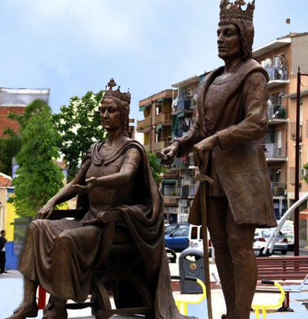
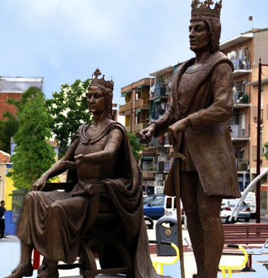
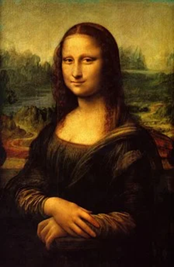
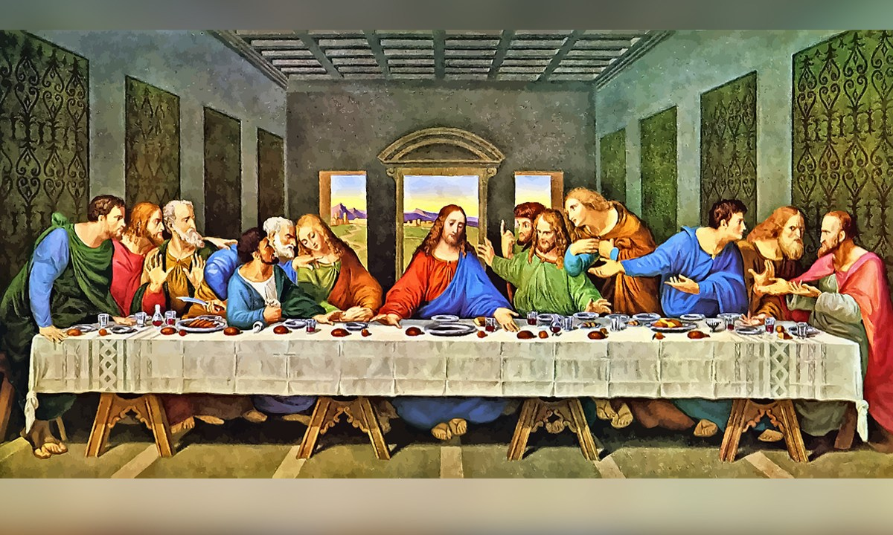
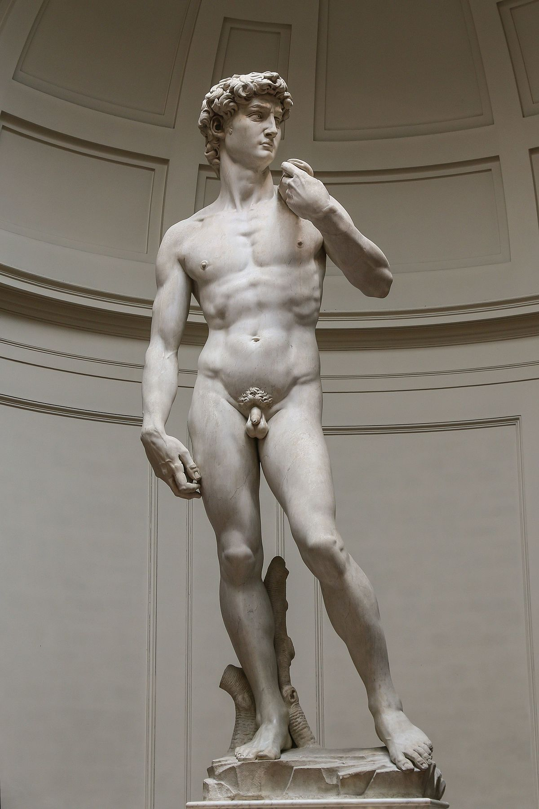

La première rencontre

Observe cette image et devine qui sont ces personnages?
Penses-tu que ces statues représentent une periode importante de l’histoire?
Trouve un titre à cette photo.

Observe cette image et devine qui sont ces personnages?
Penses-tu que ces statues représentent une periode importante de l’histoire?
Trouve un titre à cette photo.
Mais qui sont ces rois ?
Les rois catholiques sont des rois espagnols appelés ainsi car ils étaient tous les deux catholiques. Ce sont Isabelle de Castille et Ferdinand d’Aragon. En 1469, ils se marient pour unifier l’Espagne et ils cherchent à évangéliser toute l’Espagne qui le deviendra finalement en 1492.
Ces rois unissent leurs royaumes: celui de Castille et celui d’Aragon. Ils sont la transition entre le Moyen-Âge et l’époque moderne (les Temps Modernes).
Ils règnent chacun sur leur territoire mais ils prennent ensemble des décisions. Ils créent une monarchie forte en limitant le pouvoir des nobles et celui des écclésiastiques. Ils désirent également une unification religieuse sur tout leur territoire. Ils vont donc expulser les juifs et développer l’institution de l’Inquisition.
La Couronne de Castille va également financer les premières traversées transatlantiques.
Les différentes conquêtes de territoires vont leur apporter des richesses et les commerçants vont devenir riches et puissants. Pendant cette période, l’agriculture, l’élevage et l’exportation de matières premières favorisent l’économie.
Les rois catholiques développent des liens avec les familles royales européennes en mariant leur enfants. Les nobles perdent de leur pouvoir et les monarchies deviennent autoritaires en Europe. De grandes découvertes apparaissent comme par exemple l’imprimerie en 1454. Celui qui a découvert l’imprimerie s’appelle Gutenberg.
À la fin XVe siècle, un mouvement artistique et culturel apparaît en Italie et se développe en Europe, on l’appelle la Rennaissance.
Les artisites s’inspirent de l’Antiquité grecque et romaine pour créer des sculputures, comme sur la photo la Fontana di Trevi, mais ils vont également créer des oeuvres dans différents domaines comme dans la litterature et les sciences.
Regarde ces images, tu sais qui ils sont ??



Obra publicada con Licencia Creative Commons Reconocimiento Compartir igual 4.0